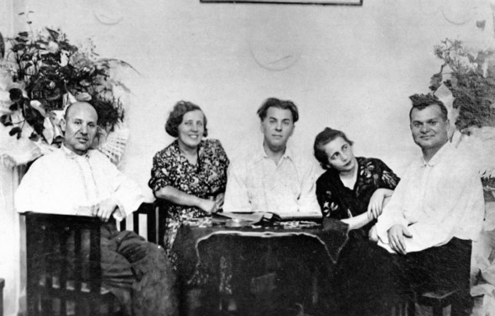
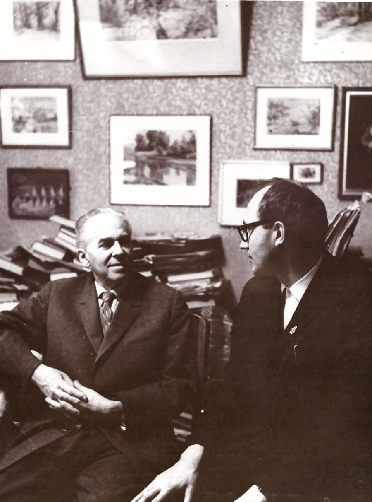

Ми насолоджувалися красою українського слова,
яке… грало, співало, бриніло,
лилося зі сторінок
незабутньої тієї книги [«Соняшні кларнети] М. Бажан
КИЇВСЬКИЙ «ДОН ЖУАН» У РОЛІТІ
Павло Тичина заселився в Роліт у 1935 р., отримавши трикімнатну квартиру №38. Подейкували, що поет обрав саме цю квартиру через можливе сусідство з Олексієм Ватулею і його дружиною Валентиною. Раніше вони були разом, але розійшлися. Можливо, на той момент почуття митця повністю не згасли до колишньої коханої. Однак при заселенні в Роліт Тичина неочікувано для себе виявив, що його квартира розташована на нижньому поверсі від тієї, де жив відомий актор з дружиною. Тож відомий автор вирішив провернути один маневр, як це колись зробив у «Слові»: обмінятися квартирами. Про це він домовився із Зіновієм Толчаковим. Проте в день, коли вони мали домовлятися про обмін, художник не прийшов на зустріч через перейми дружини і поїхав з нею в лікарню. Павло Григорович про це не знав і страшенно образився на чоловіка й більше не бажав обговорювати квартирне питання.

Павло Тичина з дружиною Лідією (в центрі), братами Іваном (ліворуч) та Євгеном і його дружиною Варварою
Нова сторінка особистого життя почалася з Лідією Папарук, з якою поет був знайомий ще з 1916 року. Розлука за час проживання митця в Харкові, а дівчини в Києві певною мірою пробудила романтичні почуття між ними. Перші п’ять років у Роліті Тичина жив сам, а Лідія продовжувала жити у своєї матері. Та як би жінка не прагнула шлюбу, а відомий автор усе ніяк з подібним не поспішав. Якщо його навідували, коли Лідія була в квартирі, то він ховав її у ванній кімнаті, а коли подібне не вдавалося, то представляв жінку, як «мою бібліотекарку»
За той час поет пережив ще одну любовну драму. На цей раз з Оксаною Петрусенко, відомою оперною співачкою. Тоді вона мешкала зі своїм першим сином у будинку навпроти Роліту. 1938 р. між співачкою і поетом спалахнув роман, але розрив переживали тяжко. Після розриву з нею Павло Тичина зрозумів, що єдина жінка, з якою він бажає прожити решту життя – Лідія Папарук. На початку 1940 р. вони розпочали сімейне життя. Вирушили на Деміївку й без зайвого розголосу зареєстрували шлюб. Весілля не справляли, та й сам Тичина не повідомляв про зміни в особистому житті. А відомо стало через кумедний випадок: композитор Пилип Козицький привів дочку свого друга Михайла Скорульського з бажанням посватати. Розгубленому Тичині не залишилося нічого иншого, як познайомити гостей з дружиною. Та в червні 40-го поет пише вірш «Ой, була собі Оксана», присвячений усе тій же Оксані Петрусенко. Дізнавшись про смерть жінки в липні того ж року Тичина весь день плакав, обхопивши голову руками, і нікому вдома не дозволяв їсти.
Вирушили на Деміївку й без зайвого розголосу зареєстрували шлюб. Весілля не справляли, та й сам Тичина не повідомляв про зміни в особистому житті. А відомо стало через кумедний випадок: композитор Пилип Козицький привів дочку свого друга Михайла Скорульського з бажанням посватати. Розгубленому Тичині не залишилося нічого иншого, як познайомити гостей з дружиною. Та в червні 40-го поет пише вірш «Ой, була собі Оксана», присвячений усе тій же Оксані Петрусенко. Дізнавшись про смерть жінки в липні того ж року Тичина весь день плакав, обхопивши голову руками, і нікому вдома не дозволяв їсти. Тоді він написав вірш її пам’яти:
Співала дзвінко, дужо, незрівнянно!
А голос був із щирого срібла!
Ой рано, рано, дуже рано
Оксано, ти від нас пішла…
Цей вірш надрукували в газеті «Комуніст» і в збірці «Сталь і ніжність», що вийшла друком наступного року. Вірш «Ой, була собі Оксана» за життя поета не друкували.
Останнім цікавим епізодом з особистого життя була зустріч з Полею Коновал незадовго до війни. У 1913-1916 рр. поет присвячував їй десятки віршів. Декілька разів вони чаювали наодинці в ролітівській квартирі Тичини й тоді зрозуміли, що кохання вщухло повністю. Відтоді єдиною коханою в житті поета була Лідія Папарук.
ПОФАРБОВАНА ДУДКА ЗОСТАЛАСЬ…

Павло Тичина у своєму кабінеті
У радянських мемуаристів Тичина постає абсолютно хоробрим чоловіком. І не дарма, адже тільки таким міг бути автор вірша «Партія веде» і слів гімну УРСР. А от еміґранти відгукуються про майстра слова, як про людину полохливу. До прикладу, Павло Григорович ніколи першим не заходив у кімнату. Йому ввижалося, щоззаду можуть схопити за руки та зв’язати. Дуже боявся автомобілів чорного кольору, бо всі вони нагадували НКВДівські воронки. Якось на вулиці позаду нього загальмувала чорна машина. Тичина від страху відразу побіг і зупинився лиш тоді, коли зрозумів, що його не переслідують.
Компроміс між собою і партією коштував дорого. Приміром у 1935 р. Павло Тичина у Париж на Перший міжнародний конгрес письменників на захист культури від фашизму. Там поет уподобав творчість Сальвадора Далі. Однак, повернувшись додому, отримав наказ написати статтю про засудження сюрреалізму. І написав… Ось цю манеру говорити те, як не вважаєш насправді помітила галичанка Софія Парфанович. Вона захоплювалася творчістю відомого поета й у січні 1940 р. мала змогу відвідати його в Роліті. Дівчина хотіла поставити декілька гострих запитань, але щирої розмови не вийшло. Митець більше слухав гостю, ніж говорив сам. Опісля подарував свою книжку «Партія веде», ніби натякаючи, що пора вживатися з новою дійсністю. Наступного вечора Софія знову навідала поета, а той подарував книжку Леніна зі словами: «Ось, що вам треба читати». Попри те, що прізвище Тичини марно шукати в протоколах НКВД (його там банально не було) – він усе одно не завжди міг писати те, що справді думав.
З весни 39-го року поет жив у елітному корпусі Роліту в квартирі №68. У середині січня 1941 р. біля кооперативу спинився автобус «УкрКіноХроніка». Приїхали знімати Павла Тичину в домашній обстановці, а саме епізод як Тичина виступає перед друзями за святковим столом. На гостину поет запросив Юрія Шумського, Григорія Вировьку з дружиною та инших відомих людей. Хроніка була знята на честь п’ятдесятиріччя поета і тридцятиріччя його творчої діяльности.
ВОЄННИЙ І ПІСЛЯВОЄННИЙ ПЕРІОД
У липні 41-го Тичину разом з дружиною і її матір’ю евакуйовано до Уфи, де він очолював Інститут літератури імені Тараса Шевченка. Він швидко вивчив башкирську і міг читати твори місцевих митців у ориґіналі. За декілька місяців написав наукову працю «Патріотизм у творчості Мажита Гафурі», хоча Гафурі писав винятково башкирсько. У 1942 р. він закінчив поему «Похорон друга». Тоді ж захотів написати великий епічний твір про конкретних героїв “Великої вітчизняної війни Радянського Союзу”. Листування з воїнами-фронтовиками і дружба з С. Ковпаком дали немалий матеріял для твору «Руднєв і Ковпак». У 1943 р. Тичину призначили Народним Комісаром освіти УРСР і він покинув Уфу. У зв’язку з новою посадою поетові було надане нове житло – квартиру в будинку по вулиці Чудновського, 5 (тепер вул. Терещенківська).
НАГОРОДИ ТА ПРЕМІЇ
1941
Сталінська премія
1941
Державна премія СРСР
1962
Шевченківська премія
1967
Герой Соціалістичної Праці
п’ять орденів Леніна
два ордени Трудового Червоного Прапора
Медаль «За доблесну працю у Великій Вітчизняній війні́ 1941—1945 рр.»